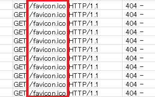
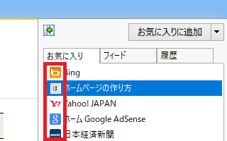
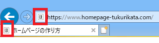
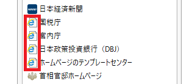
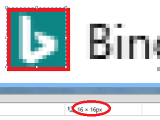
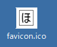
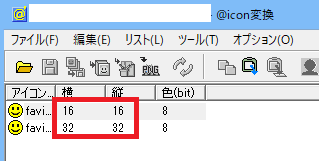
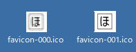
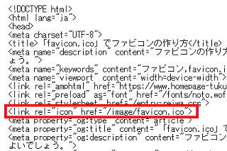

「favicon.ico」でファビコンの作り方
アクセスログを閲覧した際、「favicon.ico」のファイル名で404エラーのログが多発していることが多いと思います。

この「favicon.ico」はファビコンと呼ばれており、お気に入りアイコンの意味の「favorite icon」から出てきた言葉ですが、サイトをブラウザのお気に入りに追加した際などに表示されるアイコン画像のことを指しています。
例えば、サイトをお気に入りに追加した際、ブラウザが「favicon.ico」を探しに行き、画像があればこのように表示されます。

その他、ブラウザのタブなどでも表示されます。

一方、ファビコンが設定されていなければ、このように何も表示されません。

また、上記のように404 Not Foundのエラーログが発生することになります。
このように、「favicon.ico」はお気に入りに追加された際にアクセスされる画像のため、以前まではお気に入りの登録者数をカウントするログとして利用されることもありました。
けれども、最近ではブラウザのタブなどにも表示されるようになり、お気に入りの追加とは関係なくブラウザが参照するようになりましたので、お気に入り登録者数とはあまり関係がなくなってきています。
概ね、「favicon.ico」は「apple-touch-icon.png」のWebクリップと似たようなものになりますが、何も設定していないと上記のようにエラーログが発生してしまうことになるため、できるだけサイトにファビコンを設定しておくとよいでしょう。
ファビコンのサイズは「16 × 16px」と「32 × 32px」がおすすめ
このファビコンのサイズについてですが、ブラウザのタブやお気に入りでは「16px ×16px」で表示されます。
■「16px ×16px」の例

当サイト運営者が「16 ×16px」の大きさで「favicon.ico」を作成して実際に確認してみたところ、どのブラウザでも正常に表示されました。（※chrome、Firefox、IE11、Operaなど）
同様に「32 × 32px」のサイズで作成して設定しても、「16 ×16px」に縮小されて正常に表示されました。
あまり転送量を大きくしたくない場合、「16px ×16px」で済むならそれでよいと思いますが、解像度の高いRetina用などで「32px × 32px」も作成する人が多いです。あるいは、デスクトップにホームページへのショートカットを作成する場合などは「32 × 32px」の方が最適です。
それ以上の「48px x 48px」などでも設定しているケースがありますが、一般的には「16px × 16px」と「32px × 32px」の２種類を用意しておくとよいでしょう。
この「favicon.ico」は拡張子が「.ico」のICO形式になっており、このICOファイルには複数の画像を格納できるため、ひとつの「favicon.ico」ファイルに「16 × 16px」と「32 × 32px」の２種類の画像を入れておくことができます。
どちらかひとつではなく、2種類のサイズによるマルチアイコンで作成しておくことをおすすめします。
例えば、当サイトのファビコンはこちらになりますが、見かけ上はひとつの単一ファイルに見えるかもしれません。

けれども、@icon変換などのツールで開いてみると、「16px × 16px」と「32px × 32px」の２種類のサイズが格納されていることがわかります。

それぞれを分割してみると、パソコン上ではほぼ同じように表示されます。

ただし、左側の「16px × 16px」の小さい方は「32px × 32px」に拡大して表示されるため、右側の「32px × 32px」と比べると少しぼやけてしまうかもしれません。概ね、大きなサイズで作成した方がファビコンのクオリティーは高くなるかと思います。
いずれにしても、「16px × 16px」と「32px × 32px」の２種類の画像を入れて単一の「favicon.ico」ファイルを作成し、サイトのルートディレクトリに設定しておくとよいでしょう。
実際に作成する際、適当な画像をペイントなどで大きめに作成し、FavIcon from Picsなどのサイトにアップロードすれば、自動的に２種類のサイズが格納された「favicon.ico」に変換してくれます。
ほかにも自分で用意した画像で「favicon.ico」に変換してくれるサイトは多数あるため、ネット上で検索してみるとよいでしょう。
「favicon.ico」ファイルの設定方法
上記の手順で実際に「favicon.ico」を作成しましたら、サイトのルートディレクトリにアップロードしておくことをおすすめします。ルートディレクトリに設置しておけば、特に何も指定しなくても自動的に認識されます。
もし「favicon.ico」を他のフォルダにアップロードする場合は、<head>タグ内の<link rel="icon"で以下のように個別に場所を指定しておくとよいでしょう。

■HTML5の場合
<link rel="icon" href="/任意のフォルダ/favicon.ico">
■XHTMLの場合
<link rel="shortcut icon" href="/任意のフォルダ/favicon.ico" />
以前までのXHTMLの場合は"shortcut icon"でしたが、最新のHTML5では簡略化されており、単に"icon"と記述するだけでよくなっています。
例えば、HTML5のサイトで画像の「image」フォルダに「favicon.ico」をアップロードして指定する場合、以下のように指定します。
<link rel="icon" href="/image/favicon.ico">
そのほか、PNGやGIFの画像でもファビコンを作成することはできますが、上記のエラーログのように、デフォルトではサイトのルートディレクトリに「favicon.ico」を探しに行くことになるため、エラーログと同じ「.ico」のファイル名でアイコンを作成しておくとよいでしょう。